Maritima
hypselodoris nudibranch
Hypselodoris
maritima
Family
Chromodorididae
updated
May 2020
Where
seen? This small boldly patterned nudibranch is sometimes seen on some of
our shores.
Features: 2-3cm. Body oval. White
body with black marks all over - large blotches or smaller spots. Along the inner margin, yellow or orange wide smudged line or series of spots. Outer margin black spots on pale blue to bright blue line or spots. Large
flower-like gills on the back and large rhinophores (relative to the
body size). Gills white edged in red or orange. Rhinophores white, tipped with red or orange. |
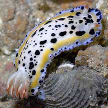
Tuas, Jul 05
|
|
|
| Maritima
hypselodoris nudibranchs on Singapore shores |
| Other sightings on Singapore shores |
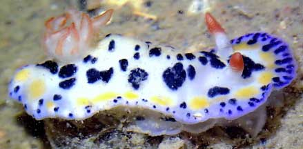
Changi, May 21
Photo shared by Jianlin Liu on facebook. |
|
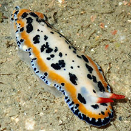
Pulau Ubin, Jul 24
Photo by Chay Hoon on facebook. |
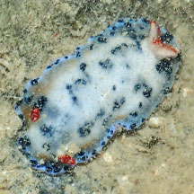
Pulau Ubin, Jul 24
Photo by Chay Hoon on facebook. |
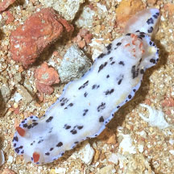
Pulau Sekudu, Aug 23
Photo shared by James Koh on facebook. |
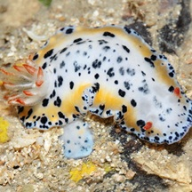
Pulau Sekudu, May 12
Photo shared by James Koh on his
blog. |
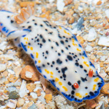
Pulau Sekudu, Jul 19
Photo shared by Marcus Ng on facebook. |
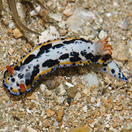
Pulau Sekudu, Jul 19
Photo shared by Rene Ong on facebook. |
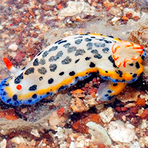
Beting Bronok, Jun 14
Photo shared by Loh Kok Sheng on his blog. |
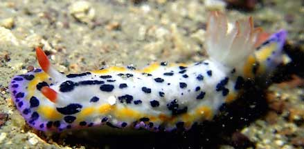
Beting Bronok, Jun 21
Photo shared by Jianlin Liu on facebook. |
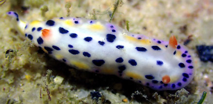
St John's Island, Feb 24
Photo shared by Jianlin Liu on facebook. |
|
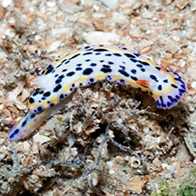
Tuas, Mar 15
Photo shared by Marcus Ng on facebook. |
|
|
Acknowledgements
Thanks
to Toh Chay Hoon for sorting out the Hypselodoris from the
Chromodoris photos.
Links
References
- Tan Siong
Kiat and Henrietta P. M. Woo, 2010 Preliminary
Checklist of The Molluscs of Singapore (pdf), Raffles
Museum of Biodiversity Research, National University of Singapore.
- Chou, L.
M., 1998. A
Guide to the Coral Reef Life of Singapore. Singapore Science
Centre. 128 pages.
- Debelius,
Helmut, 2001. Nudibranchs
and Sea Snails: Indo-Pacific Field Guide IKAN-Unterwasserachiv, Frankfurt. 321 pp.
- Wells, Fred
E. and Clayton W. Bryce. 2000. Slugs
of Western Australia: A guide to the species from the Indian to
West Pacific Oceans.
Western Australian Museum. 184 pp.
- Coleman,
Neville. 2001. 1001
Nudibranchs: Catalogue of Indo-Pacific Sea Slugs. Neville
Coleman's Underwater Geographic Pty Ltd, Australia.144pp.
- Coleman,
Neville, 1989. Nudibranchs
of the South Pacific Vol 1. 64 pp.
- Humann, Paul
and Ned Deloach. 2010. Reef
Creature Identification: Tropical Pacific New World Publications.
497pp.
- Gosliner,
Terrence M., David W. Behrens and Gary C. Williams. 1996. Coral
Reef Animals of the Indo-Pacific: Animal life from Africa to Hawaii
exclusive of the vertebrates Sea Challengers. 314pp.
|
|
|